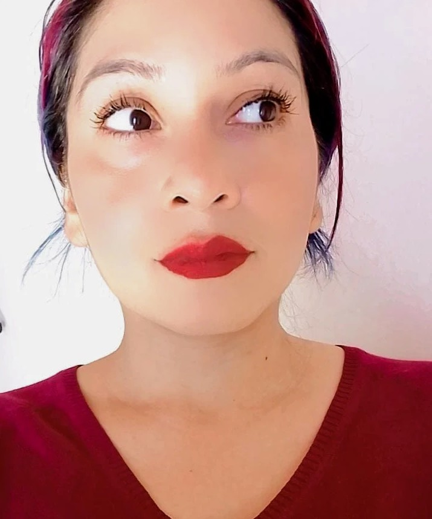
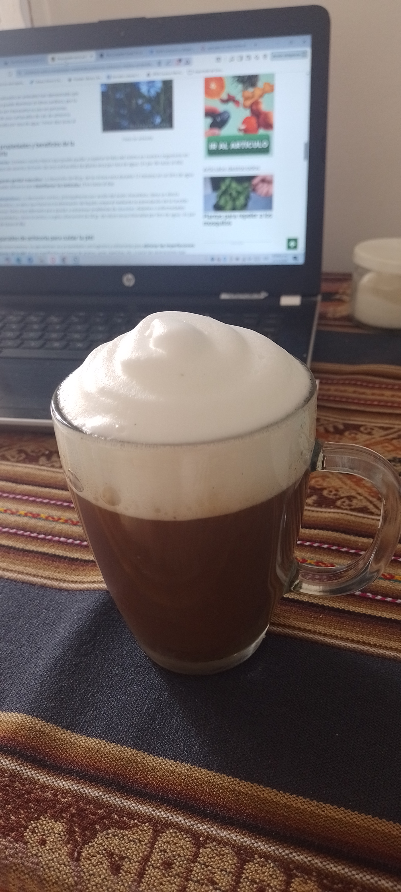

¡Hola! Soy Majo
Desarrollo Web
Contenido Digital
Transformo ideas en experiencias digitales memorables. Creo sitios web, edito videos y gestiono redes sociales para marcas y proyectos que quieren conectar con las personas.
● Disponible para proyectos freelance y trabajo remoto

